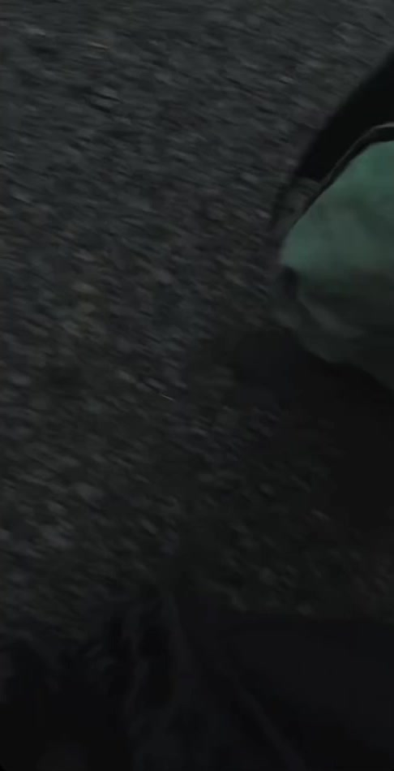
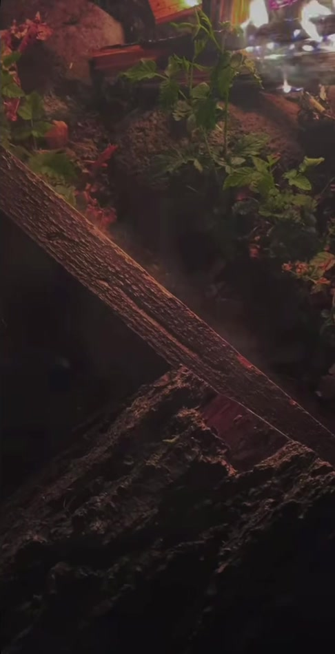

Work · Film & video · FR 11 / 13All work
Forest, Rain
Film
Credits
Forest, Rain
TypeFilm
CategoryFilm & video
Runtime00:24
Aspect9 : 16
Roll · Frames from the film
Frames
02 frames

FR 01A figure with an umbrella in a rain-dark forest 
FR 02A campfire at night


Open a frame to view it full screenSwipe
FR 01 / 02